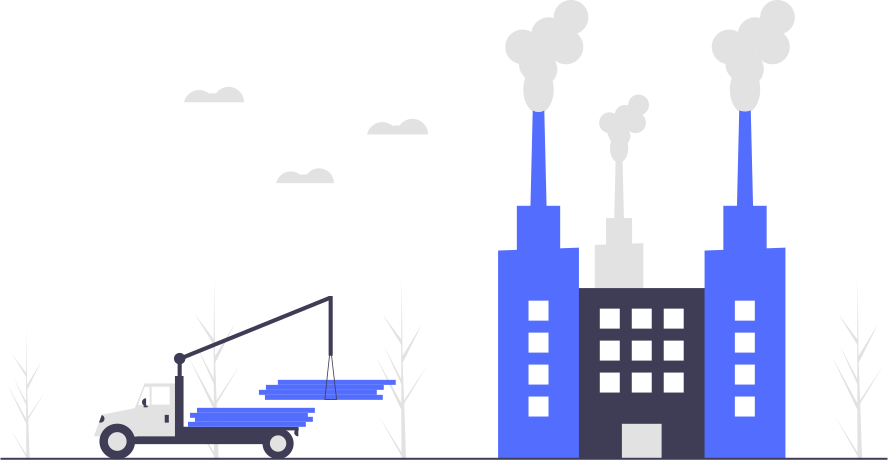
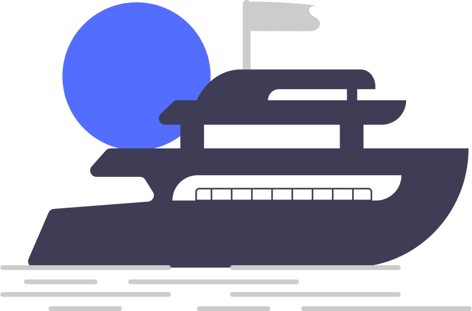

|

“If there is magic on this planet, it is contained in water.” — Loren Eiseley |
Sustainable Building MaterialsIt's based on generating 100% sustainable products, as well as their reuse or recycling after use. For example, homes based on recycled polymer compounds, with non-toxic minerals and other additives developed by people. |
|
Green AgricultureGlobally, agriculture accounts for 70% of water resources, so it is essential to have climate-friendly crops, efficient irrigation that reduces the need for water and energy-efficient food production. Green agriculture is also crucial to limit the chemicals that enter to the water. |
“We forget that the water cycle and the life cycle are one.” — Jacques Yves Cousteau |
|
|

“The cure for anything is salt water: sweat, tears or the sea.” — Isak Dinesen |
Air Pollution PreventionAir pollution has a direct impact on water contamination as 25% of human induced CO2 emissions are absorbed by oceans. This pollution causes a rapid acidification of our oceans, and threatens marine life and corals. Preventing air pollution is the best way to prevent this from happening. |
|
Maritime Area Integral SupervisionThey are integrated systems of hardware and software platforms whose purpose is to control and collect data from a maritime area with a defined perimeter. It aggregates several types of data in a unique interface in order to enhance the knowledge about what's happening in the area, then takes corrective actions. |

“We forget that the water cycle and the life cycle are one.” — Jacques Yves Cousteau |
|